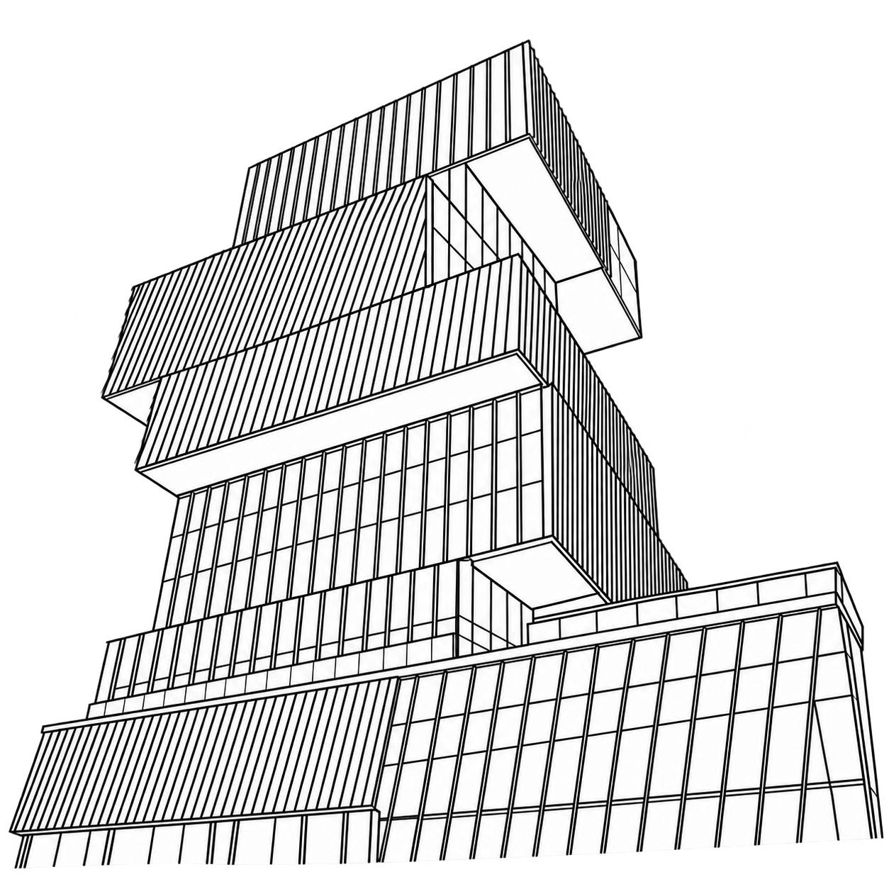

I am Joey Russoniello, a data engineer at Trinity Property Consultants in Irvine, California. I build software that fixes inherently clunky environments. At Boston University, classrooms were assigned by hand, so I built the optimizer that now places nearly 4,500 classes in 90 seconds. At work, I built a Python query layer that lets our underwriting app read financial and operating metrics directly from our semantic models.
I like to step back from a problem, see how the pieces fit together, and rebuild the ones that do not.
Boston University fits nearly 4,500 classes into hundreds of rooms. Here is the same problem with six courses and eight rooms, plus a catch: BIO and CHEM need lab rooms. Try to fit them yourself, or press Solve.

Every semester, Boston University fits nearly 4,500 classes into hundreds of classrooms. Before this project, any optimization was done by hand at the registrar. I built the Classroom Utilization Project as my capstone, in a clinic run with BU's Information Services & Technology.
The model treats the whole semester as one mixed-integer program. A class cannot go in a room that is too small, and two classes cannot share a room at the same time. Once those hold, it optimizes for fewer wasted seats and for keeping classes close to their department's home building.
Around the solver sits a FastAPI service that streams progress to a React app and keeps every run in SQLite, so results can be compared. It repairs infeasible warm starts, which lets a solve begin from the current schedule instead of from nothing. The solver sits behind a port, with Gurobi as the first adapter.
The project is open source and under review by IS&T and the Office of the University Registrar. A new student team continues the work this fall.
Each one has its own page: what the problem was, what I made, and how it holds up.
I built a Python query library and DAX compiler for custom web apps. Our internal underwriting app uses it to run parallel queries across two semantic models. Model-aware validation is next.
I built a reusable ETL library for Excel Office Scripts and a Rust compiler that trims unused library code from each script.
I built a Rust CLI for test-based partial-credit grading, used by 130+ students across 1,000+ assignment repositories in one semester at BU.
I reconstructed 126K game runs and compared per-floor classifiers with LSTMs to estimate how a run’s win probability changes.
I built a Python SDK for ADP Workforce Now, starting with birthday and anniversary reminders. It now supports several internal HR integrations at Trinity.
Three years across data engineering and applied machine learning, bridging large-scale pipelines and predictive modeling, with a focus on scalable, cost-effective data platforms.
Engineered PySpark, Hadoop, and SQL workflows that raised data processing efficiency by 80% across business domains.
Designed STAR schema Direct Lake models that cut load times 15x.
Replaced SaaS business reporting with tailor-made solutions, saving around $1.5 million a year.
Taught sections of DS210, Programming in Rust, and built assignment stubs, test suites, and an autograding CLI.
Integrated WSL workflows so labs worked across platforms.
Guided students through neural network troubleshooting, improving assignment pass rates.
Built Power BI models that cut report generation time by 95%.
Implemented statistical and machine learning models to improve budget forecasts for a multi-million-dollar portfolio.
Streamlined data pipelines to raise model training throughput and accuracy.
GPA 3.98.
Treasurer of Boston University on Broadway.
Boston University AI Development Acceleration Researcher.
I am not actively looking, but I am glad to talk about optimization, data platforms, or developer tools.